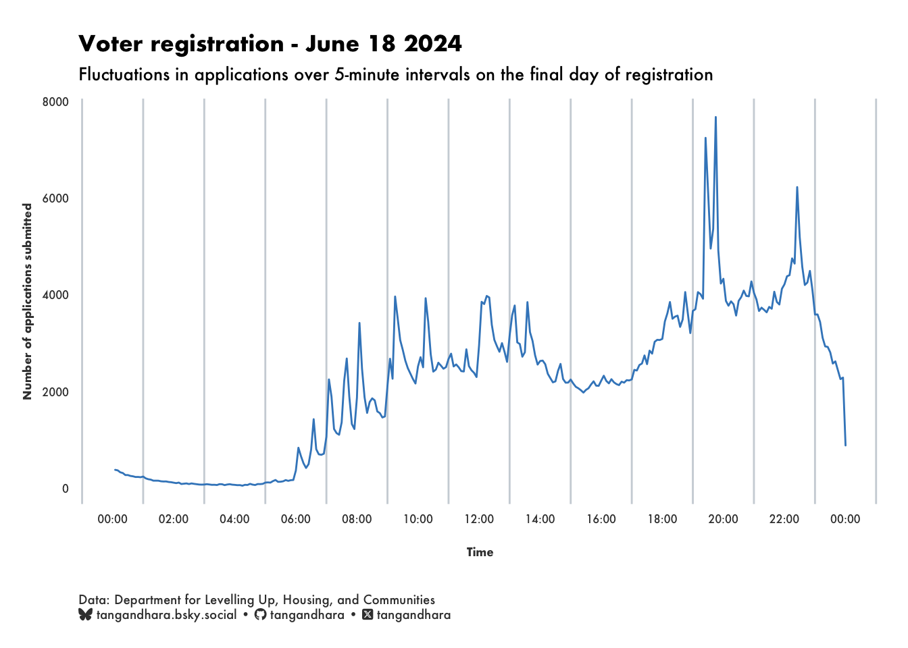
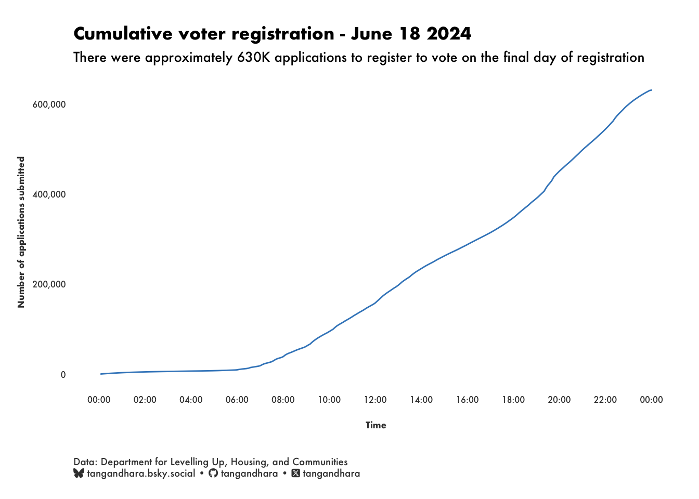
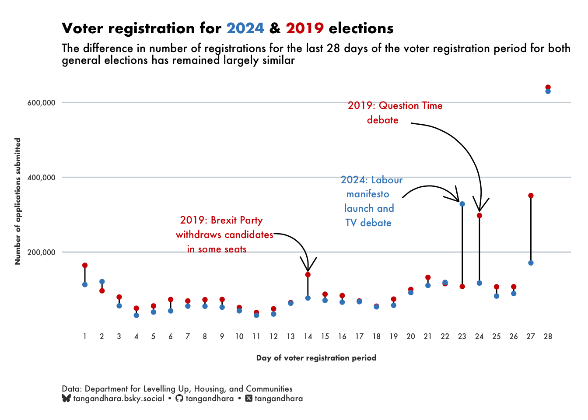
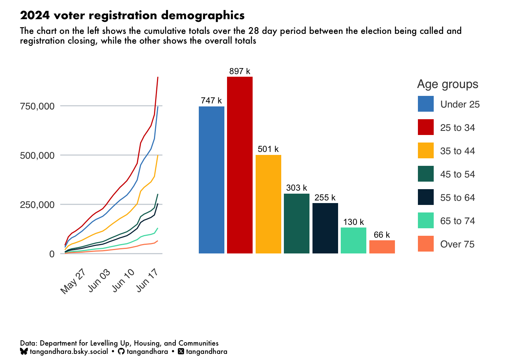
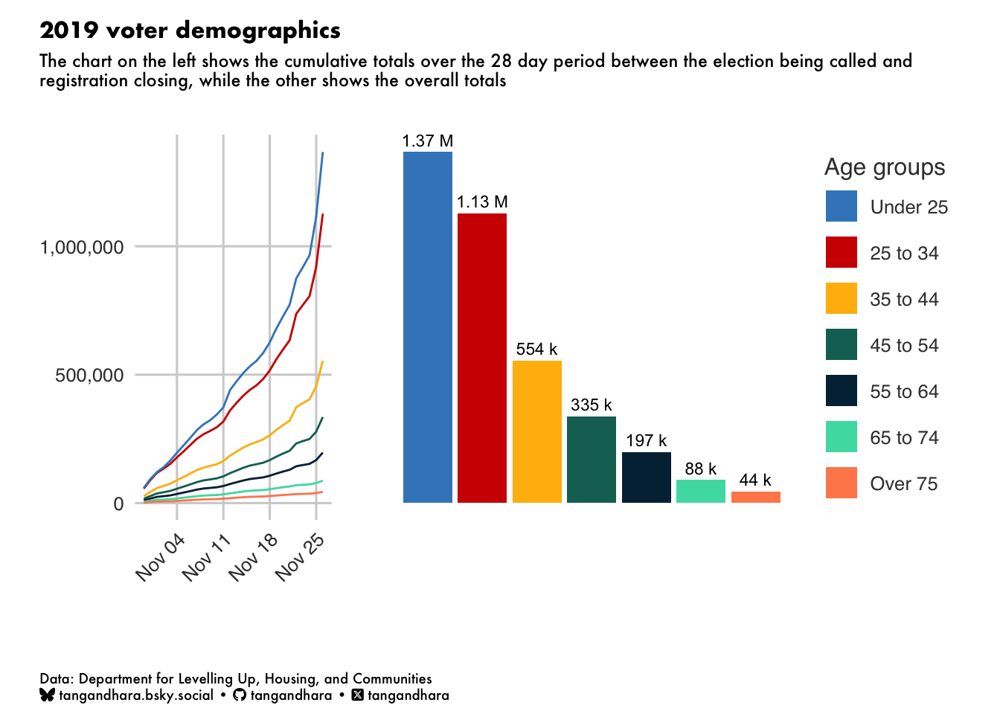

Election voter registration
Who has registered to vote in the 2024 general election?
R
ggplot2
General election 2024
This general election seems like it will be the most significant result since 1997 with Labour gaining a sizeable majority after fourteen years of Conservative rule. Rather than look at polls, I thought it would be interesting to explore who has registered to vote over the past four weeks since the election was called.
The Department for Levelling Up, Housing, and Communities (DLUHC) has a performance dashboard with all the relevant data available for this brief analysis.
The last 24 hours
Let’s start with the last 24 hours before registration closed. The DLUHC dashboard records the number of voter registration applications submitted in a 5-minute period for its live service usage report. I downloaded the data shortly after midnight to get a view of the full day’s applications and the plot looks something like this:
I wanted to understand what caused some of those spikes and used my own experience and did some investigation to come up with some answers.
6-8am
It’s difficult to see on the chart above, but the underlying data shows these occurred in the 5-10 minutes after 6am, 6:30am, 7am, etc. There’s no details on the dashboard suggesting that there is a lag so my assumption here is that this two-hour window is typically when people have just woken up and, after either browsing online media or switching on the TV, have been reminded that June 18th was the last day to register to vote in the general election and did so before getting on with the rest of their day.
9-10am
There’s a bit of a dip before two further prominent spikes that happen just after 9am and again just after 10am. I couldn’t find details of anything that might have prompted these. So my assumption here is that between the last spike just after 8am and the one at 9am, people are getting ready for work, dropping kids off at school, commuting, etc. So it is only at 9am when when they either start work or, if not working, see a reminder on one of the daytime TV shows to register to vote. This latter point may especially be true for the 10:15am spike in registrations since it occurs just after This Morning starts at 10am.
Lunchtime
At around 12 noon, TikTok sends out a push notification to its users reminding them to register and has been attributed as contributing to the increae in registrations.
5pm
As many people were probably finishing their workday, Jeremy Corbyn, the now expelled Labour MP and former party leader at the 2019 general election, posted this tweet just after 5pm:
Unfortunately, a tabloid newspaper has got hold of a music video I recorded in Islington North with an iconic grime artist I've admired for years.
— Jeremy Corbyn (@jeremycorbyn) June 18, 2024
They are planning to publish a heavily edited clip, so I'm releasing the full version myself. Watch here: https://t.co/vwNGQN2wqU
Of course, it was a spurious claim and the link took people to the voter registration site. It was one of a number of similar tweets in the the run up to June 18th and Corbyn received 4 million views, 59K likes, and 15K retweets but hardly registers as a spike in registrations. That said, it occurs just as there is a significant upward trend in numbers.
6-8pm
The evening is pretty chaotic with evening TV news from 6pm reporting on the election latest and reminding viewers that the day was the last day to register to vote in time for the election. Sky News also published an article about the deadline and, I understand may have sent a notification to users of its app about it:
The deadline to register to vote in the general election is today.
— Sky News (@SkyNews) June 18, 2024
Here's everything you need to know about how to do it 👇 https://t.co/s98MGwEMw2
Channel 4 News also hosted a debate with leaders of some of the main parties from 6.30pm - 8pm. At around 7.30pm, the Apple News app on iPhones sent out a notification to users linking to an article about the deadline to register to vote.
10.30pm
Registrations remain fairly consistent from around 8pm through till 10:30pm when we see a final peak before registrations drop-off by midnight. I’ve not been able to establish what might have caused registration to rise so much other than social media reminders that created a sense of urgency about the imminent deadline. Perhaps, this combined with a captive audience on their phone at bedtime was the right combination to give registrations one final push.
Total deadline day registrations
The final number of registrations was 629,878 and as you can see from the chart of cumulative registrations, between 7am and midnight, there was a consistent and steady upward trend.

My reading of this is that there was no single event that necessarily caused the registrations to spike, but the effect of regular reminders drove momentum. I take this view on the basis that there is no plateau at any point in the day in the cumulative numbers apart from the early hours of the morning.
How does this compare to the last election in 2019? Well, I can’t perform a similar analysis of the final day since the data is not available but, according to DLUHC, the total number of applications received on November 26 2019 was 640,815, the equivalent of 1.7% more registrations when compared to 2024.
2024 vs 2019 voter registrations
Although a comparison of the two deadline days is not possible, we can compare the number of registrations over the period between the election being announced and the last day voters can register to vote. In 2024 this period lasted 28 days while in 2019 it was 29 days long so I’ve dropped the first day in 2019 ot make the periods line up.
Nevertheless, we see a remarkably similar trend over the four weeks:

For both elections, we see an inital flurry of registrations over the first few days before numbers stabilise with similar numbers for each year until final days of the registration period. Apart from this, we see a significant spikes in the fourth week - what could have caused them? There’s not just one reason that can be attributed to these jumps in registrations but here are some of the events that occurred around those dates:
In 2024, the spike is on day 23 which was June 13, the day when Labour launched its manifesto and ITV held the first debate with representatives of seven parties.
In 2019, this spike occurred on day 24 which was November 22, and was the day of a debate on BBC Question Time between the main party leaders and the day after Labour’s manifesto launch. We also see a smaller spike on day 14 - November 12 - of the 2019 election. A number of things happened on that day, including a cyber attack on the Labour party’s IT systems and major flooding in northern England. However, the key political event likely to have caused the increase was the decision by Nigel Farage’s Brexit Party to withdraw candidates in constituencies where the Conservatives had won seats in the 2017 election.
2024 vs 2019 voter registration demographics
Finally, let’s take a look at how 2024 has compared to 2019’s voter registration demographics.

